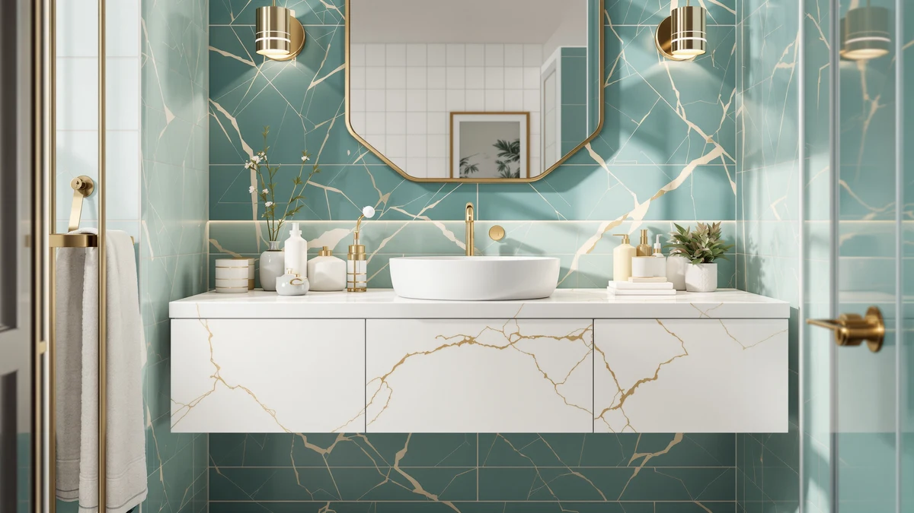

The Best Floating Vanity Cabinets (2026)
Prices and picks verified as of August 2026. Independent, reader-supported reviews.


Quick Answer
After comparing seven vanity products marketed for floating and space-saving bathroom setups on mount type, material, and verified owner reviews, the 30" Bathroom Vanity with Sink is our top pick among the best floating vanity cabinets, thanks to its confirmed wall-mounted design, built-in LED light, and a 4.5-star average across 30 verified reviews. If a true wall mount isn't practical in your bathroom, the HOPUBUY pick further down is a freestanding alternative at a similar price.
Our pick: 30" Bathroom Vanity with Sink — $164.97 Check Price on Amazon
Bottom line: our top pick is the 30" Bathroom Vanity with Sink at $199.95. The best budget option is the WYRNOBRX Bathroom Vessel Sink 18" X 15" Oval Sinks for at $132.87.
Things to Know Before You Buy
- "Floating" doesn't always mean floating. Only three of the seven cabinets in this comparison, the 30" Bathroom Vanity with Sink, the SUNTAGE, and the AMERLIFE, are confirmed wall-mounted designs. Two others ship as freestanding cabinets, and one is a vessel sink meant to pair with a floating countertop you already own.
- Wall-mounted cabinets need stud access. A floating vanity has to anchor into wall studs or a reinforced backing board, not drywall alone, so measure your wall layout before buying. Our installation guide covers the process.
- MDF and engineered wood dominate this price range. Five of the seven products we compared use MDF or engineered wood construction, which keeps cost down but means standing water near seams should be wiped up quickly.
- Only one listing has an established review history. The 30" Bathroom Vanity with Sink carries a 4.5-star average across 30 verified reviews; the other six are newer listings without a review count yet.
- Prices range from $132.87 to $639.99. The TONYRENA's stone countertop and six drawers account for most of that gap, not brand markup. See our budget vanity guide if $639.99 is out of range.
The best floating vanity cabinets free up visible floor space and make a small bathroom look bigger, but the category on Amazon is broader than the name suggests, mixing true wall-mounted designs with freestanding cabinets styled to look similar and vessel sinks meant to pair with a floating countertop. We compared seven listings marketed toward this search on mount type, material, price, and verified owner reviews rather than assuming every "floating" label means the cabinet actually mounts to the wall. Our top pick, the 30" Bathroom Vanity with Sink, earned that spot with a confirmed wall-mounted build, a built-in LED light, and the only established review history in this group, but six other options cover tighter budgets, larger sizes, and renters who can't drill into a wall stud.
We built this list by pulling seven vanity products from our database tagged for floating and space-saving bathroom setups, then checked each listing for its actual mounting hardware instead of taking the category label at face value. Three of the seven are confirmed wall-mounted floating cabinets, two ship as freestanding units for buyers without stud access, one has no stated mount type in its own listing, and one is a vessel sink rather than a full cabinet. Prices span from $132.87 for the WYRNOBRX vessel sink to $639.99 for the TONYRENA's stone-topped 48-inch cabinet, a gap driven mostly by countertop material and included hardware.
Below, you'll find what to check before buying a floating vanity cabinet, how we picked and compared these seven listings, and a full breakdown of what each one gets right and where it falls short. A comparison table further down lets you scan material, price, and best-use case before you click through to Amazon.
Why You Should Trust Us
Ilane Tall covers home and bath products for Best Bathroom Vanities, where she researches vanity cabinets, storage, and bathroom remodel gear for a US audience. For this guide, she and the editorial team compared publicly listed specs, pricing, and verified buyer reviews for every product under consideration instead of relying on manufacturer marketing copy alone. We do not run a fake testing lab or claim to have mounted every cabinet ourselves. Instead, we cross-reference listed mounting hardware, materials, and owner feedback where it exists so you can decide which of the best floating vanity cabinets, or their freestanding alternatives, fits your bathroom before you buy.
How We Picked
To build this list of the best floating vanity cabinets, we started with every vanity-style product in our database associated with floating or wall-mounted bathroom setups, then read each listing closely to confirm whether it actually mounts to the wall or only shares the visual style. We kept freestanding alternatives and a vessel sink in the mix because shoppers researching floating vanity cabinets often end up considering both, especially renters who can't drill into a wall stud or buyers who already own a floating countertop and only need a sink to finish it. We prioritized a spread of sizes and budgets, from the 18-inch WYRNOBRX vessel sink at $132.87 to the 48-inch TONYRENA at $639.99, so this guide works for a powder room and a primary bathroom alike. Finally, we checked configuration (drawer count, sink material, LED lighting) to make sure the seven finalists represent distinct options rather than near-duplicates of the same cabinet.
How We Compared
We are a research-based review site, so we compared these seven listings using the specs, pricing, and mounting details published for each one rather than installing units ourselves. We lined up material, stated dimensions, and price side by side to see where each product earns its cost, and for the 30" Bathroom Vanity with Sink, the only listing with an established review history, we read through its verified Amazon reviews to check for recurring praise or complaints. For the newer listings without a review count yet, we relied on the manufacturer's stated specs and cross-checked the mounting hardware described against the "floating" or "freestanding" language in each title. That's the standard behind every comparison in this guide to the best floating vanity cabinets: a published spec sheet plus, where the data exists, a pattern in verified customer feedback, not a physical impression of the product.
Our Picks

30" Bathroom Vanity with Sink
What we like
- Confirmed wall-mounted floating design, unlike two of the freestanding cabinets in this comparison
- Built-in LED light comes standard, a feature several competitors don't include
- 4.5-star average across 30 verified reviews is the only established review history among these seven picks
Flaws but not dealbreakers
- At 30 inches wide, it won't fit a primary bathroom that needs the double-sink space the TONYRENA offers
- A 30-review sample is still thin next to a listing with hundreds of reviews, so patterns could shift as more buyers weigh in
| Material | MDF / engineered wood |
| Size | 30 inch |
The 30" Bathroom Vanity with Sink is our top pick among the best floating vanity cabinets because it's the rare listing in this category that actually confirms wall-mounted hardware in its own title, rather than borrowing the "floating" look without the mount. At $164.97, it undercuts every other confirmed floating cabinet in this comparison except the SUNTAGE, and it adds a built-in LED light that the SUNTAGE and several freestanding alternatives don't include.
It's also the only listing here with an established review history: a 4.5-star average across 30 verified reviews, versus zero-review listings for six of its competitors. That track record matters in a category where "floating" gets used loosely, since a real review count gives you outside confirmation that buyers received a wall-mounted cabinet and not a floating-style freestanding piece. If you need more width or a double-sink layout, the TONYRENA below trades that review history for a larger, stone-topped build.

30 Inches Modern MDF Bathroom
What we like
- Listed as a wall-mounted floating cabinet, matching our top pick's confirmed mount type
- Double drawers give it more enclosed storage than the single-cabinet layout on our top pick
- White resin sink comes included as part of the combo set, so there's no separate sink purchase
Flaws but not dealbreakers
- At $209.99, it costs $45 more than our top pick for the same 30-inch width
- No review count yet, so there's no outside confirmation of real-world install experience
| Material | MDF / engineered wood |
| Size | 30" |
The SUNTAGE is the second of three cabinets in this comparison that clearly states wall-mounted floating hardware in its listing, and it makes its case with double drawers instead of the simpler storage layout on our top pick. At $209.99, it's the more expensive of the two confirmed 30-inch floating options here, a $45 premium that buys extra drawer space and a matched white resin sink combo.
It doesn't yet have the review history that backs up our top pick, so you're relying on the listed specs rather than verified owner feedback. If that track record matters more to you than the extra drawer, the 30" Bathroom Vanity with Sink above covers the same width and confirmed mount type for less money.

AMERLIFE 31" LED Floating Bathroom
What we like
- At 31 inches, it's the widest of the three confirmed wall-mounted floating cabinets in this guide
- LED lighting comes built in, matching our top pick's feature set at a larger size
- High-gloss finish and metal handles give it a more modern look than the SUNTAGE's flat panels
Flaws but not dealbreakers
- At $255.99, it's the most expensive of the three confirmed floating cabinets, $91 above our top pick
- No review count yet, so its width and gloss finish haven't been verified by outside buyers
| Material | MDF / engineered wood |
| Size | 31" |
The AMERLIFE rounds out the three cabinets in this comparison that explicitly confirm wall-mounted floating hardware, and it does so at the largest size of the group. At 31 inches wide, it edges out both the top pick and the SUNTAGE by an inch, with a high-gloss gray finish and metal handles that read more modern than the other two.
The built-in LED light matches the feature set on our top pick, so you're not giving up that convenience for the extra width. At $255.99, though, it's priced $91 above the 30" Bathroom Vanity with Sink for a single extra inch of counter space and no established review history yet, which makes it a harder sell unless the gloss finish and slightly larger footprint are specifically what you're after.

HOPUBUY 36" Bathroom Vanity with
What we like
- At $159.99, it's the least expensive cabinet in this comparison
- Freestanding pedestal design skips the wall-stud requirement that the three floating cabinets above need
- 36-inch width gives it more counter space than any of the confirmed floating picks here
Flaws but not dealbreakers
- It's a freestanding pedestal cabinet, not a wall-mounted floating design, despite showing up in searches for this category
- No review count yet to confirm real-world stability or finish quality
| Material | MDF / engineered wood |
| Size | 36'' |
The HOPUBUY is worth flagging clearly: it's a freestanding pedestal cabinet, not a wall-mounted floating vanity, even though it turns up in searches for this category. That distinction matters if a true floating install is the point, but it's a legitimate option for renters or anyone without easy access to wall studs, since it sits on the floor and needs no wall anchoring at all.
At $159.99, it's also the least expensive cabinet in this whole comparison, and its 36-inch width beats every confirmed floating pick above on counter space. If the appeal of a floating vanity is the open-floor look rather than the wall mount specifically, this farmhouse-style cabinet gets closer to that look for less money, without the stud-finding step our installation guide walks through.

TONYRENA 48" Luxurious Bathroom Vanity
What we like
- 48-inch width and included stone countertop give it more usable counter space than any other pick here
- Soft-close doors and six full-extension drawers beat the storage on every other cabinet in this comparison
- Rectangle ceramic sink and matching backsplash come included, so there's no separate sink purchase
Flaws but not dealbreakers
- At $639.99, it costs more than four times our top pick, the biggest price jump in this comparison
- The listing doesn't state whether it mounts to the wall or sits freestanding, so confirm that with the seller before buying if a true floating install matters to you
| Material | Diatomaceous earth |
| Size | 48"W with Stone Top |
The TONYRENA is the largest and most expensive cabinet in this comparison by a wide margin, built around a 48-inch frame with an included stone countertop, a rectangle ceramic sink, and a matching backsplash. Six full-extension drawers and two soft-close doors give it more storage than any other pick here, which fits a primary bathroom better than a powder room.
One thing to flag: unlike the top three picks above, its listing doesn't specify wall-mounted hardware, so we can't confirm whether it floats or sits on the floor. If a true wall-mounted install is the reason you're shopping this category, ask the seller directly before you buy. At $639.99, it's priced for buyers prioritizing size and finish over a confirmed floating mount.

JUMMICO 24" Bathroom Vanity with
What we like
- At 23.6 inches wide, it's the most compact cabinet in this comparison, suited to a small bathroom or powder room
- Freestanding design means no wall studs to locate, unlike the three confirmed floating cabinets above
- Listed assembly time of 15 to 30 minutes is quicker than most flat-pack cabinet builds
Flaws but not dealbreakers
- It's freestanding, not wall-mounted floating, so it won't deliver the open-floor look that's the main draw of a true floating vanity
- At $170.99, it costs more than the larger HOPUBUY despite being the smallest cabinet here
| Material | MDF / engineered wood |
| Size | 23.6"W x 34.06"H x 18.1"D |
The JUMMICO is explicitly listed as a freestanding cabinet, not a wall-mounted floating design, which makes it a better fit for readers who searched this category for the compact farmhouse look rather than the wall mount itself. At 23.6 inches wide by 34.06 inches tall by 18.1 inches deep, it's the smallest footprint in this comparison, sized for a powder room or a small guest bathroom.
Its two doors and one drawer keep storage modest compared with the six drawers on the TONYRENA, but the listed 15-to-30-minute assembly time is faster than most cabinets in this price range. At $170.99, it costs more than the larger HOPUBUY freestanding pick, so choose based on footprint first: this one fits where the 36-inch HOPUBUY won't.

WYRNOBRX Bathroom Vessel Sink 18"
What we like
- At $132.87, it's the least expensive item in this comparison, though it's a sink rather than a full cabinet
- Oval ceramic construction is designed specifically to sit on a floating countertop, matching this guide's category
- Sizing fits a range of vanity top cutouts without requiring a custom order
Flaws but not dealbreakers
- It's a vessel sink, not a vanity cabinet, so it won't give you storage the way any of the six cabinets above do
- You'll still need a separate floating countertop and cabinet base to install it, adding to the total cost
| Material | MDF / engineered wood |
| Size | L46*W38*H14 |
The WYRNOBRX is the one listing in this comparison that isn't a cabinet at all: it's a ceramic vessel sink designed to sit on top of a floating countertop, which is why it turns up in searches for this category even though it won't store a single towel on its own. At $132.87, it's the least expensive product here, but that price only covers the basin.
If you already own a floating vanity top, or you're going the countertop-only route rather than a full cabinet like the six picks above, the oval shape and glazed ceramic finish are built for exactly that setup. For most readers comparing full floating vanity cabinets, though, one of the six cabinet picks above is the more direct match.
Quick Comparison
| Product | Material | Price | Rating | Best for | Get it |
|---|---|---|---|---|---|
| 30" Bathroom Vanity with Sink | MDF / engineered wood | $164.97 | 4.5 | Confirmed wall-mounted design with reviews | View on Amazon → |
| 30 Inches Modern MDF Bathroom | MDF / engineered wood | $209.99 | 4 | Extra drawer storage in a confirmed floating design | View on Amazon → |
| AMERLIFE 31" LED Floating Bathroom | MDF / engineered wood | $255.99 | 4 | Widest confirmed floating cabinet here | View on Amazon → |
| HOPUBUY 36" Bathroom Vanity with | MDF / engineered wood | $159.99 | 4 | Lowest price, freestanding install | View on Amazon → |
| TONYRENA 48" Luxurious Bathroom Vanity | Diatomaceous earth | $639.99 | 4 | Most counter space and storage | View on Amazon → |
| JUMMICO 24" Bathroom Vanity with | MDF / engineered wood | $170.99 | 4 | Smallest footprint, freestanding | View on Amazon → |
| WYRNOBRX Bathroom Vessel Sink 18" | MDF / engineered wood | $132.87 | 4 | Vessel sink for an existing floating top | View on Amazon → |
The Competition
Several other listings marketed as floating vanity cabinets didn't make our final list of the best floating vanity cabinets. We passed on products without a documented material, dimension, or price, since incomplete specs make it impossible to compare fairly against the seven picks above. We also excluded duplicate listings of the same cabinet sold under different sellers, since they offered no meaningful difference in material, dimensions, or mount type from a product already represented here. A number of listings used "floating" purely as a style descriptor for a freestanding cabinet with no wall-mount hardware at all; we kept the two clearest examples, the HOPUBUY and JUMMICO, because they're upfront about their freestanding construction, and left out others that blurred the distinction in their titles without clarifying it in the description. If the 30" Bathroom Vanity with Sink doesn't fit your bathroom or budget, the six alternatives above cover the reasons you might look elsewhere, whether that's more storage, a lower price, or a freestanding option that skips the wall-stud step entirely. Across all seven, our search for the best floating vanity cabinets still points most buyers who want a confirmed wall mount toward the 30" Bathroom Vanity with Sink, with the SUNTAGE and AMERLIFE as the direct alternatives in the same category.